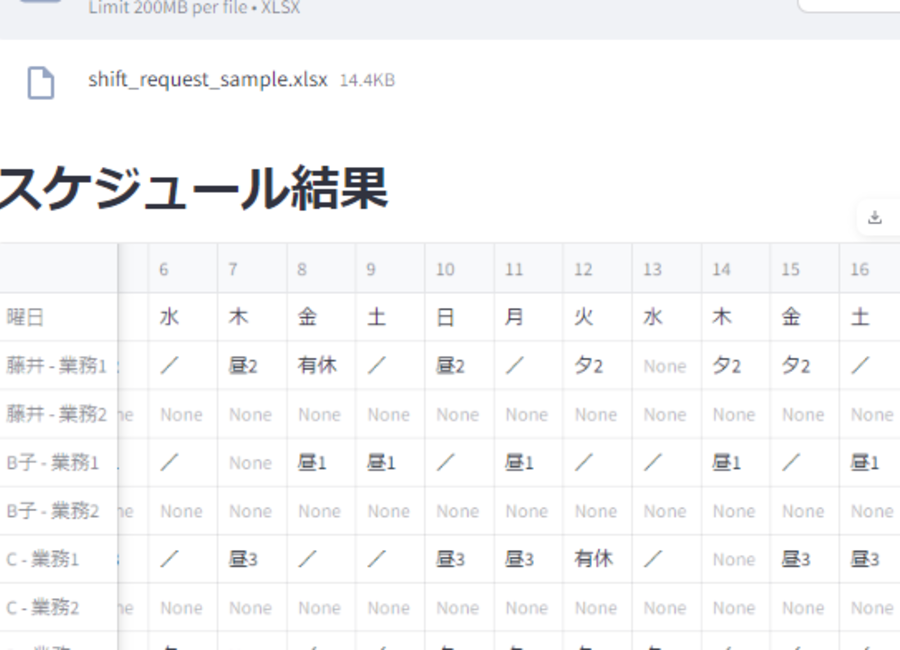
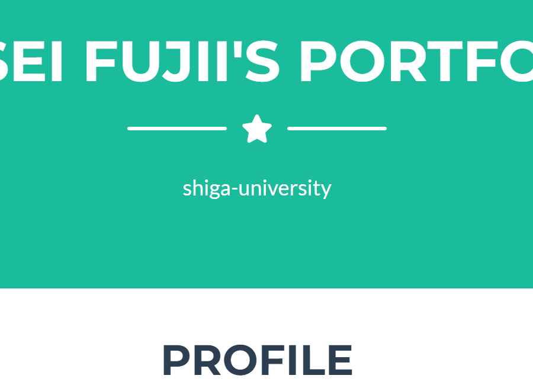
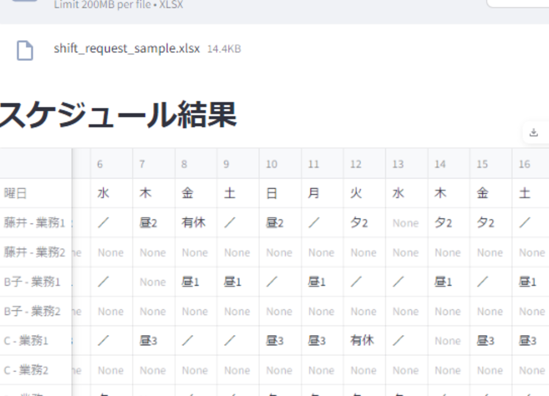
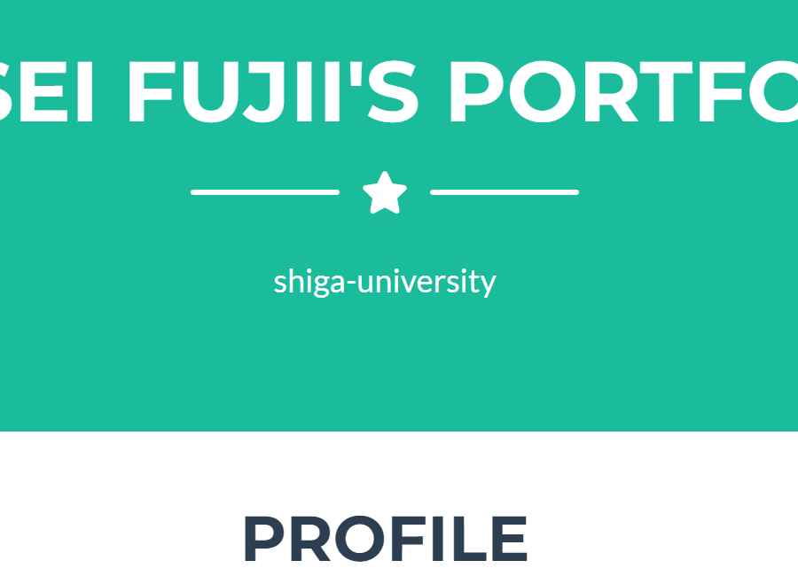

works
シフト自動生成サービス（Excel入力版）
シフト自動生成サービス（Vue・Flask）開発中

ポートフォリオサイト
shiga-university
初めまして。滋賀大学データサイエンス学部２年の藤井倫生と申します。
プログラミングの歴は大学入学からの２年です。
大学１年次は大学野球部のデータ分析班として活動していました。データ分析でプログラミングを学習していくうちに、自分で何か動くものを作りたいと思うようになり、web開発の勉強を開始しました。半年ほど前からweb系の会社でインターンをしております。
将来は、誰かの人生の助けになるようなプロダクトを提供できるようになりたいと考えています。
直近ではVue.jsを使用して開発をしています。
flaskを使用しています。
SQLiteで主に開発。MySQLは授業やハッカソンで使用しました
学校では主にpythonやRを用いたデータ分析・機械学習をしています。
開発等で使用しているツールです
シフト自動生成サービス（Excel入力版）
シフト自動生成サービス（Vue・Flask）開発中
ポートフォリオサイト
